最近因為需求買了 Macbook
因為也是第一次擁有 Mac 系列產品
所以分享一下在 Mac 上安裝 Unity 開發環境的流程 ( Unity Free ＆ Android SDK )
這裡所安裝的版本是最新的 Unity 4.6.0f1
1.下載 Unity 安裝檔案
Unity 4.6 Beta版下載位置 ( 今天一看發現已經是 Open Beta 了!!! )
2.安裝 Unity
下載 Unity 後直接點選 .dmg 檔案進行安裝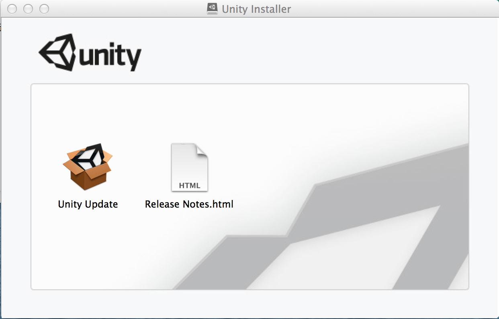
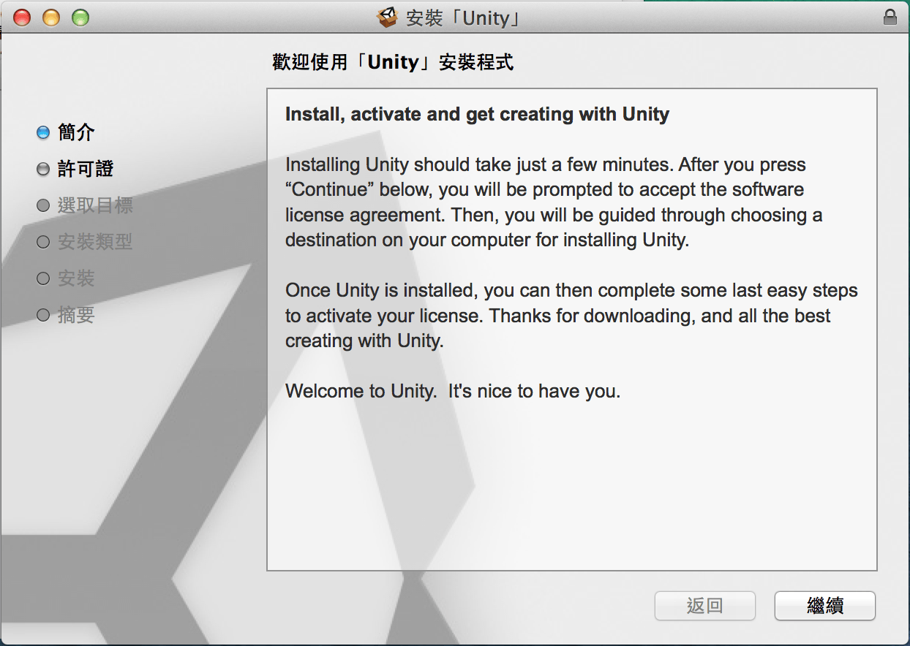
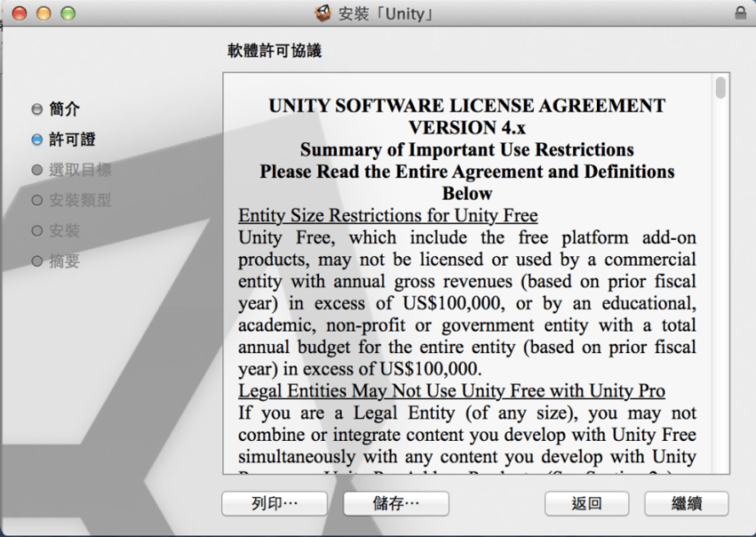
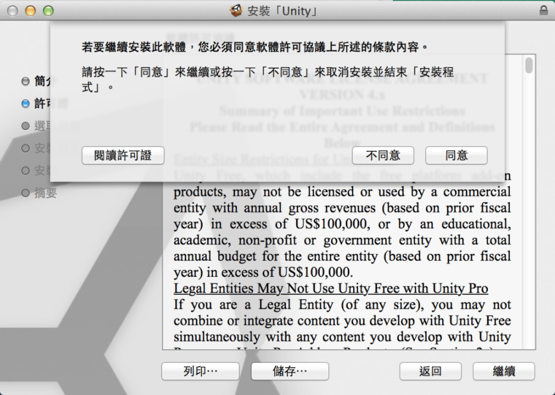
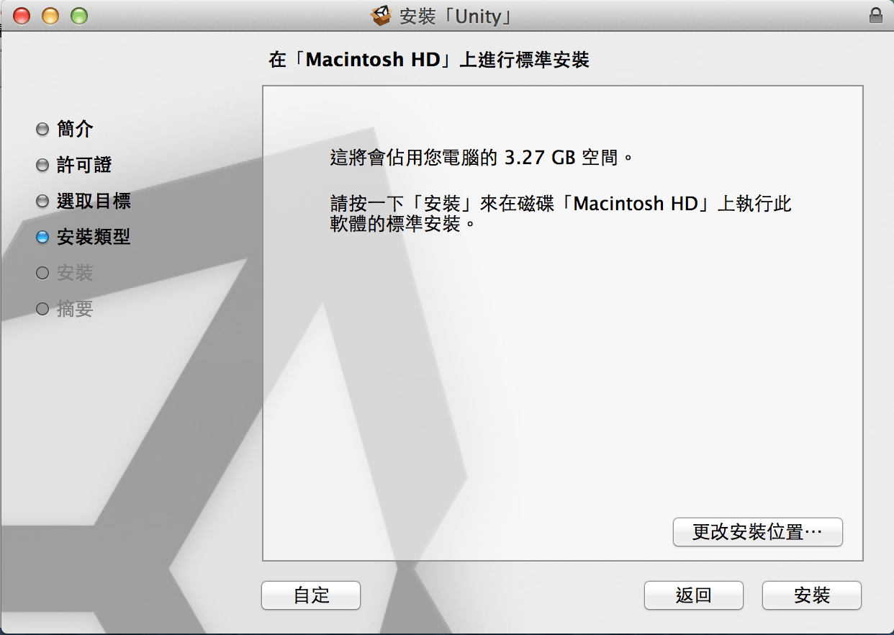
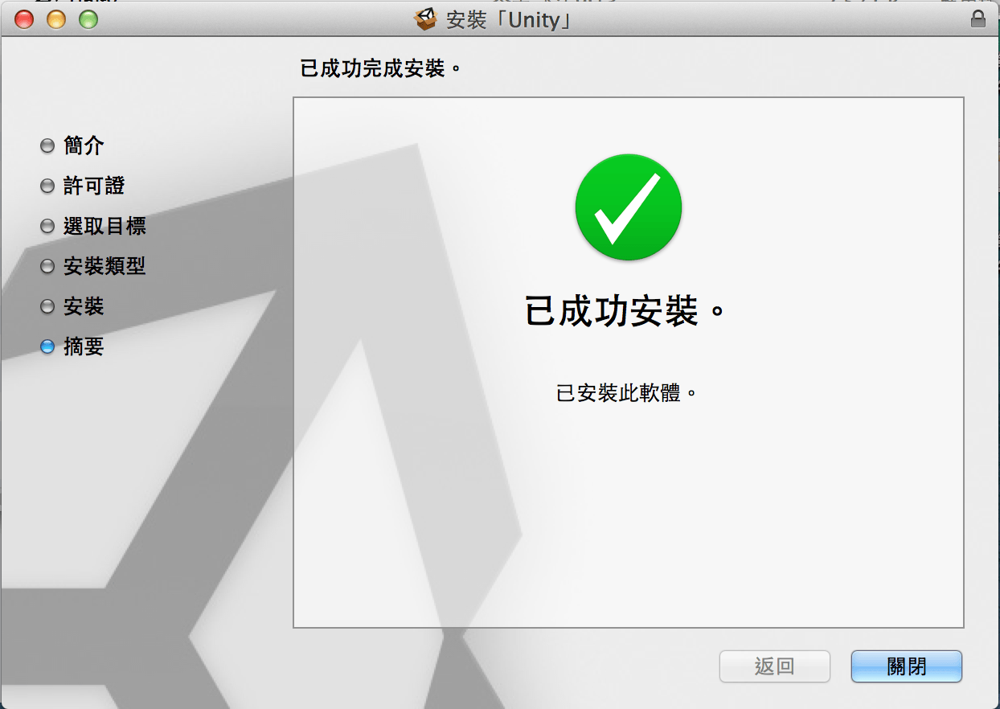
3.下載 Android SDK
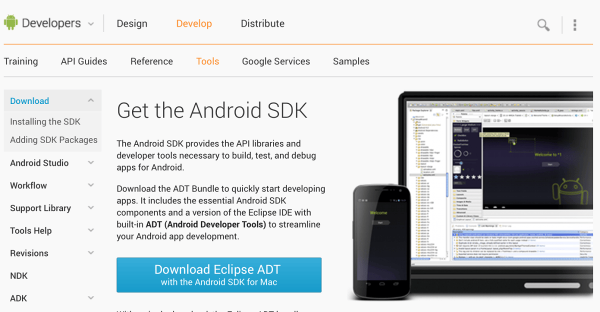
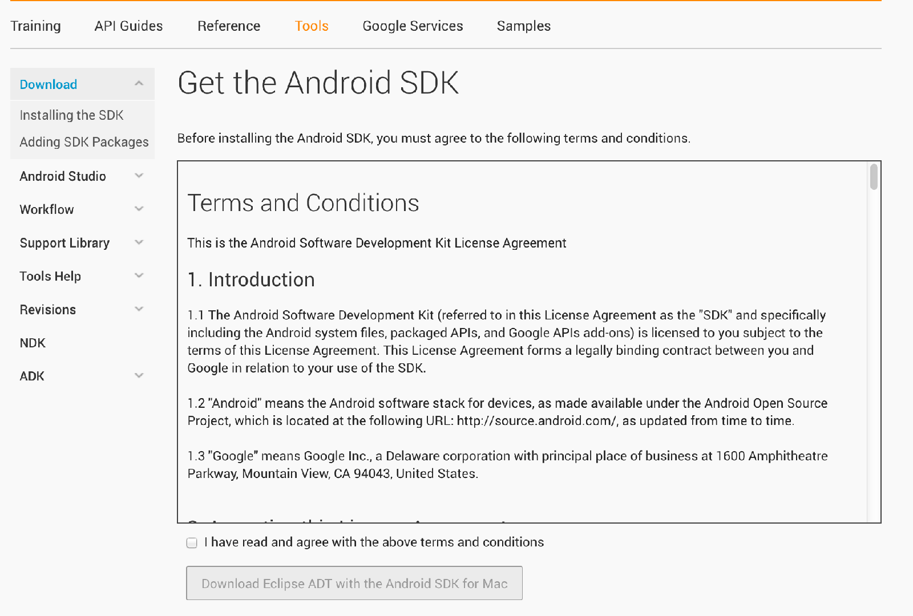
4.安裝 Android Eclipse ADT
將下載的 .zip 檔解壓縮到指定資料夾
這裡我是將檔案解壓縮到應用程式中
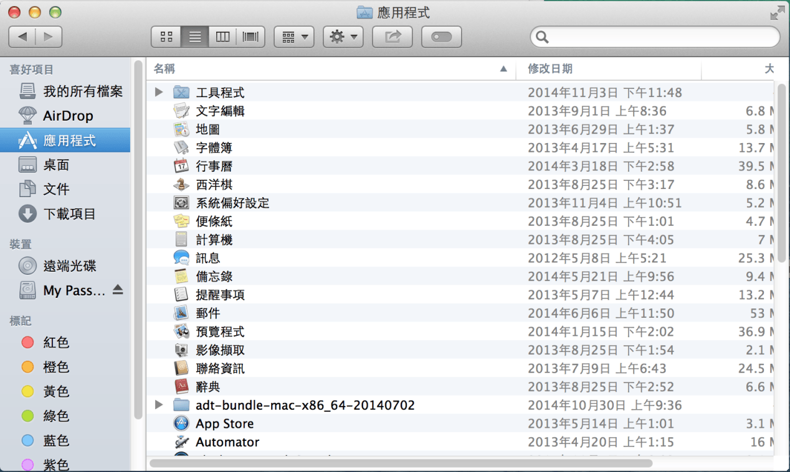
5.在 Unity 中設定 Android SDK 位置
Unity ⟶ Preferences ⟶ External Tools ⟶ Android SDK Location
選取在安裝目錄中的 sdk 資料夾
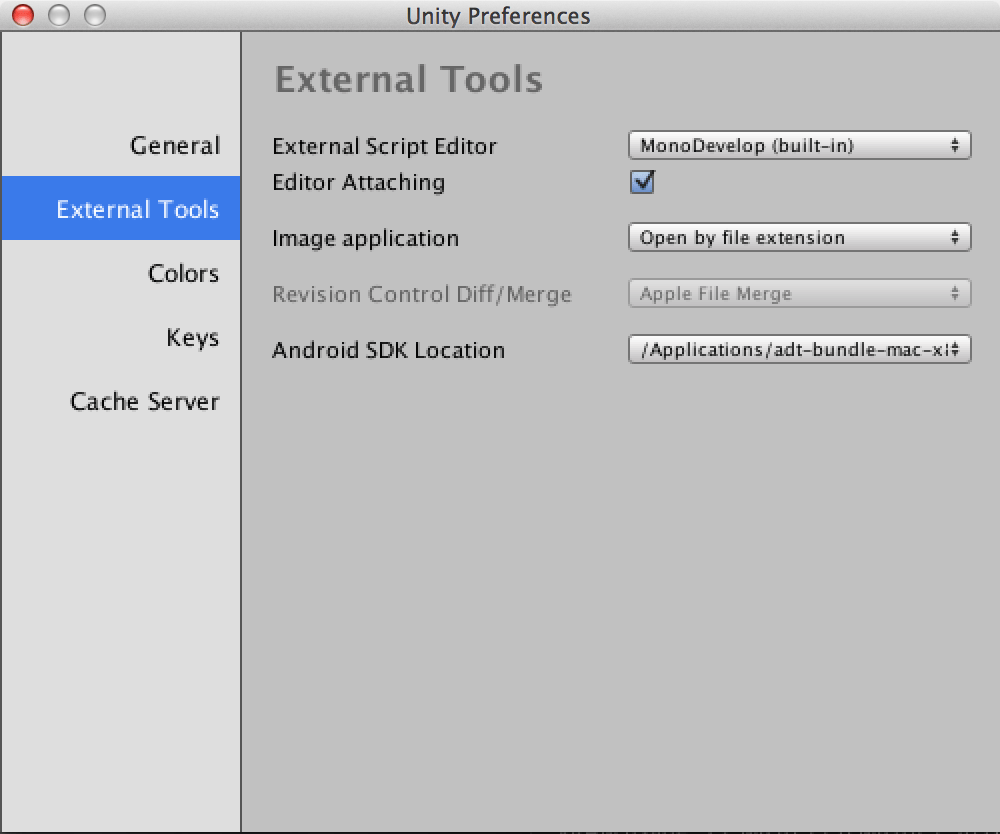
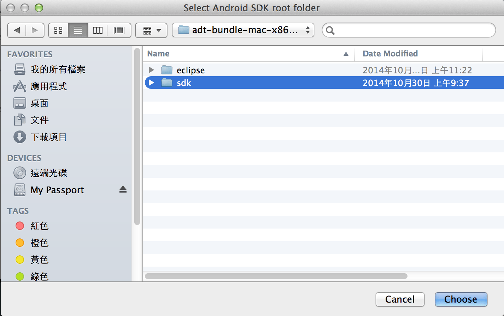
6.開發環境設定完成